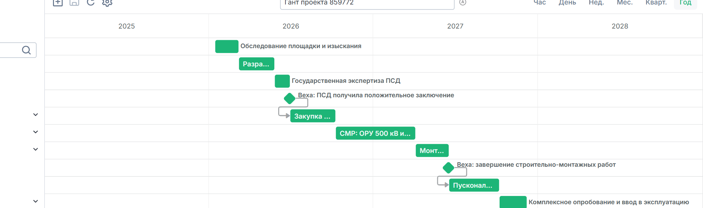
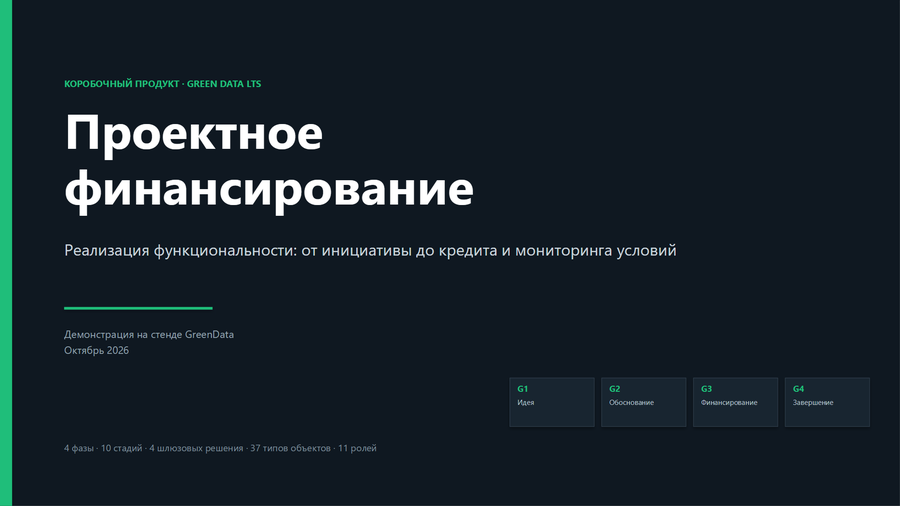
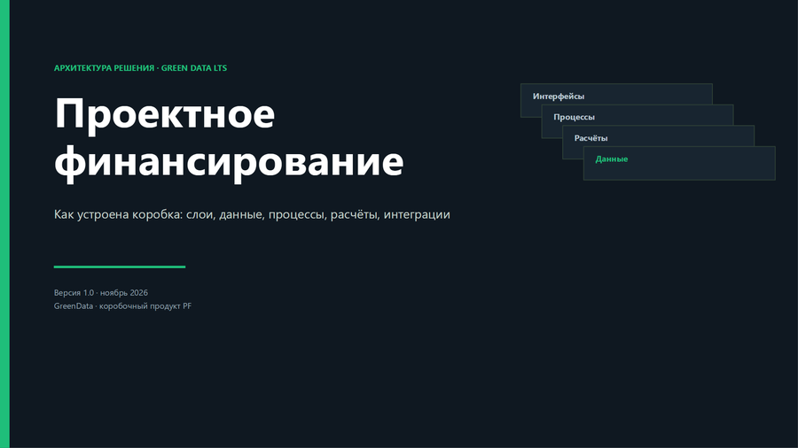
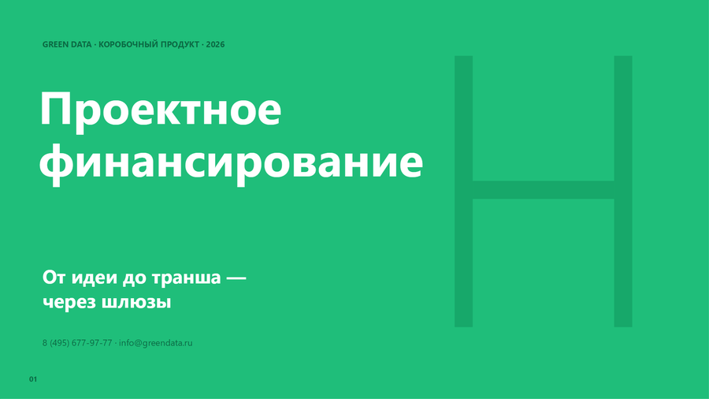

стадий
От заявки до действующего кредита — один сквозной маршрут
Коробочный продукт · GreenData LTS
«Проектное финансирование» — коробочный продукт для корпораций и холдингов, в которой инициативы, обоснование, эффективность, риски и кредит живут в одном контуре. Переход между этапами — не «поехали», а проверяемый шлюз с зафиксированным решением.
40 минут · на ваших примерах · без общих презентаций
От заявки до действующего кредита — один сквозной маршрут
Решение фиксируется с органом, основанием и условиями
Методика описана до бизнес-правил и тест-кейсов
Кредит, собственные средства и лизинг в карточке проекта
Почему коробка
То, что обычно живёт в регламентах и головах методологов, здесь уже работает: четыре фазы, 37 типов объектов, 11 ролей и печатные формы. Остаётся настроить пороги под себя.
Процессы, справочники, карточки, реестры и шаблоны предварительно настроены. Пилот запускается параметрами, а не разработкой с нуля.
NPV, IRR, MIRR, PI, PP и DPP считаются одинаково для всех проектов. Версии модели сохраняются, утверждённую нельзя переписать.
Каждый шлюз фиксирует орган, основание и условия. Через год видно, почему проект получил деньги и что изменилось с тех пор.
Пороги принятия решений, критерии скоринга, чек-листы и роли меняются настройками low-code платформы — без остановки процесса.
44 функциональные модели, 4 фазы и 10 стадий описаны до бизнес-правил, экранов и тест-кейсов — а не «на словах».
GreenData LTS: low-code, BPM и BI. Платформа внесена в реестр российского программного обеспечения.
Карточки, реестры, диаграмма Ганта, дашборды и печатные формы. Не конструктор, который предстоит собрать.
Фишка продукта
Шлюз — это не совещание и не подпись для галочки. Это проверяемый чек-лист, порог полномочий и запись решения, из которой растёт следующий шаг. Проект не может перескочить этап: маршрут просто не пустит.
Стадия 1 «Идея» → Фаза II
Первый и самый дешёвый фильтр. Здесь отсекается всё, что не стоит даже затрат на обоснование: неполные заявки, дубли, проекты вне стратегии и инициативы без экономического смысла.
Паспорт проекта, назначенная команда и автоматически запущенная стадия «Проработка» с типовыми задачами и сроками.
Стадии 2–4 «Проработка» → Фаза III
Шлюз качества плана. Проверяется не «красивость» презентации, а связность обоснования: цели, работы, сроки, бюджет по этапам и базовый план, с которым потом будут сравнивать факт.
План, в котором каждая работа имеет срок, ответственного и стоимость — и от которого система считает отклонения, а не «как договоримся».
Стадия 5 «Эффективность и риски» → Фаза IV
Главный шлюз. К нему проект приходит с утверждённым расчётом, стресс-сценарием и реестром рисков. Инвесткомитет видит не набор слайдов, а версию модели, пороги и связь каждого критического риска с параметром расчёта.
Проект в стадии «Финансирование»: с лимитом, перечнем условий и расчётом, который можно перепроверить через год — и увидеть, что изменилось.
Стадия 10 «Отчётность»
Финальный шлюз жизненного цикла: проект либо завершается с итоговым отчётом, либо получает продление, либо закрывается с зафиксированными отклонениями. Мы не продаём его как готовый: он в дорожной карте следующего релиза.
Чтобы маршрут был замкнутым: без финального шлюза инвестиционный цикл заканчивается «сам собой», а выводы не возвращаются в следующие проекты.
Шлюзовой светофор: зелёный — допущен, жёлтый — на доработку, красный — отклонён. Три состояния вместо десятка устных договорённостей.
Посмотреть шлюзы на демоСостав продукта
Коробка закрывает путь от заявки до действующего кредита. Это не список модулей, а последовательность, в которой проект двигается: каждая фаза заканчивается результатом, с которым можно идти дальше.
Стадия 1 «Идея» → шлюз G1
Стадии 2–4 → шлюз G2
Стадия 5 → шлюз G3
Стадии 6–7 «Финансирование»
Возможности
Четыре механизма, из которых складывается управляемость: расчёт, риски, план и кредит. Каждый — с экраном, правилами и блокировками, а не только с описанием в регламенте.
Модель собирается из допущений и потоков по периодам, показатели считаются по утверждённой методике. Результат нельзя переписать после утверждения — и всегда видно, на какой версии модели принималось решение.
NPV по сценариям, млн ₽ · ставка дисконтирования 12,5%
Реестр рисков — не таблица в приложении к меморандуму, а рабочий объект. Критический риск без меры блокирует утверждение результата: сначала мероприятие, ответственный и срок, потом решение.
Утверждение результата заблокировано: у критического риска нет плана мер
Работы, вехи и зависимости живут в системе вместе с бюджетом по этапам. Базовый план фиксируется на шлюзе G2 — и дальше любое отклонение видно как отклонение, а не как новая версия «в рабочем порядке».

Условия из договора становятся объектами с категорией, периодичностью и ответственным. По каждому строится график проверок, а отметка ставится только на отчётную дату — не «когда вспомнили».
Аналитика
Дашборд «Портфель инвестиционных проектов» — 4 вкладки и 16 панелей: воронка по стадиям, вклад направлений в NPV, карта «NPV × IRR» с пороговой линией, матрица рисков 5×5 и просроченные условия кредитов.
От первой заявки до ковенантного контроля — на каждом шаге система отвечает на вопрос «что дальше и на каком основании».
11 ролей с разными правами и зонами ответственности. Ниже — те, кто получает выгоду первыми.
Единый реестр, воронка, комплектность и повестка. Портфель собирается сам, а не вручную по почте.
Одна методика, версии модели и расшифровка формул. Расчёт защищается ссылкой, а не памятью автора.
Комплект к заседанию, а не набор слайдов. Решение опирается на утверждённый расчёт и реестр рисков.
Структура источников и условия кредитов. Видно, что просрочено и что блокирует выборку.
Реестр, матрица 5×5, KRI и митигация. Критический риск не теряется между совещаниями.
История решений, версии документов и журнал изменений. Проверка занимает минуты, а не недели.
Что в поставке
В поставку входит не только приложение: настроенные процессы, справочники, методики, экраны, отчёты и документация. Команде заказчика не нужно проектировать модель данных с нуля.
Интеграции с ERP, казначейством, ЭДО, BI, HR и справочниками — через API платформы.
Процессы, состояния, задачи, сроки и эскалации от «Идеи» до «Финансирования».
37 типов объектов, роли, права и наследование доступа к дочерним объектам.
Финансовая модель, показатели эффективности, сценарии, чувствительность и пороги.
Дашборд портфеля: воронка, NPV по направлениям, карта «NPV × IRR», матрица рисков.
Кредитный договор с приложением условий, повестка, лист экспертизы, паспорт проекта.
Описание фаз, бизнес-правил и тест-кейсов; обучение команды и поддержка запуска.
Материалы
Функциональность на живых экранах стенда, архитектура решения и короткая презентация для бизнеса. Скачиваются в PPTX и открываются в PowerPoint.

Сквозной разбор коробки: инициативы и БП, карточка проекта, план-график и Гант, финансовая модель, риски, кредит, условия и дашборд.
Скачать PPTX
Слои решения, 12 модулей, домены данных, процессный и расчётный контуры, интеграции, права, развёртывание и дорожная карта.
Скачать PPTX
Короткая продающая история: проблема, цена хаоса, идея шлюзов, что меняется, кому это нужно и как начать пилот.
Скачать PPTXВопросы
Excel не хранит историю решений и не проверяет полноту; самописный портал обычно закрывает одну фазу. Здесь сквозной маршрут: заявка, экспертиза, скоринг, шлюз, паспорт, план-график, расчёт, риски и кредит — в одной модели данных. Версия расчёта, решение по шлюзу и условия договора связаны между собой.
Нет. Продукт не заменяет ERP, бухгалтерию и казначейство — он связывает их в контур принятия инвестиционных решений. Платежи, учёт и закупочные процедуры остаются в своих системах, обмен идёт по интеграциям. Продукт фиксирует план, решение, условия и факт, а не проводит бухгалтерские операции.
Да, и чаще всего так и начинают. Первый контур — инициативы и шлюз G1: он даёт быстрый эффект и не требует зрелого планирования. Дальше подключаются план-график, эффективность и кредитный блок. Фазы используют общую модель данных, поэтому второй этап не переделывает первый.
Коробка уже настроена, поэтому запуск — это настройка порогов, справочников, чек-листов и шаблонов под ваш регламент. Пилот на одной фазе занимает недели, а не месяцы; полный контур разворачивается поэтапно, без остановки текущего инвестиционного процесса.
Пороги принятия решений, критерии и веса скоринга, чек-листы экспертизы, состав рисков, шаблоны договоров и роли меняются настройками low-code платформы. Доработка кода не требуется: методика остаётся вашей, а не «как в коробке».
Ролевая модель с правами на объекты и атрибуты, наследование прав дочерними объектами, журнал аудита с автором и датой изменения, версионность документов и расчётов. Платформа GreenData внесена в реестр российского ПО.
Покажем на демо, как выглядит маршрут от заявки до кредита: карточка инициативы, скоринг, решение G1, расчёт эффективности, матрица рисков и мониторинг условий.
Спасибо! Мы свяжемся с вами в течение рабочего дня, чтобы согласовать время демонстрации.